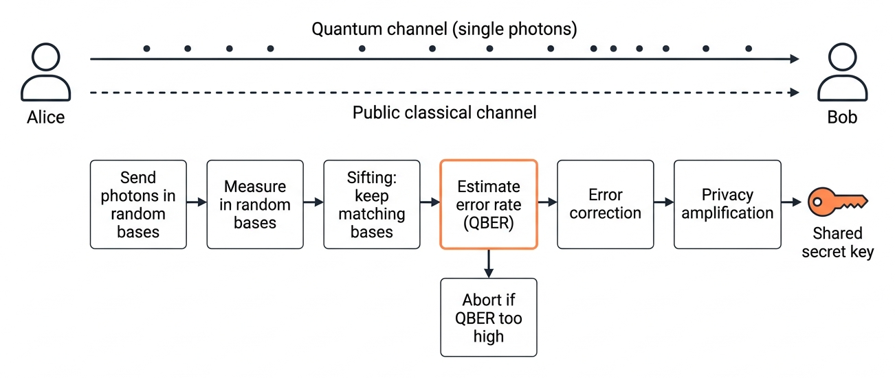
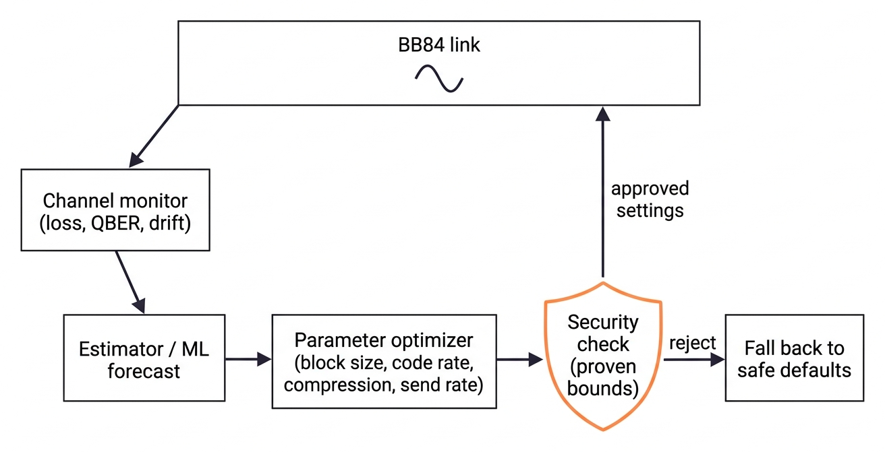

Can BB84 Dynamically Adapt to Changing Channel Conditions?

In one sentence
Real quantum channels drift from minute to minute — can a BB84 system keep re-tuning itself to get the most secret key out of the channel it actually has, without ever letting the tuning weaken the security proof?
What is the problem?
Picture a quantum link running over 30 km of fiber buried along a city road, or through open air between two rooftops. In the morning it is quiet. At midday the fiber warms up and stretches slightly, the polarization of the light slowly rotates, a truck rumbles past, sunlight leaks into the free-space detector. The amount of light lost and the number of errors at the receiver change all day long.
The system on that link runs BB84, the oldest and best-understood quantum key distribution (QKD) protocol. In plain words, it works like this:
- Alice sends single photons, each carrying one bit encoded in one of two randomly chosen bases — think of them as two different "alphabets", for example horizontal/vertical polarization or diagonal polarization.
- Bob measures each photon, also in a randomly chosen basis. When his basis matches Alice's, he reads the bit correctly; when it does not, his result is a coin flip.
- Over an ordinary public channel they compare which bases they used (never the bits) and throw away the mismatches. This is called sifting.
- They reveal a random sample of the remaining bits to estimate the quantum bit error rate (QBER). Quantum physics guarantees that an eavesdropper who measures the photons inevitably disturbs some of them, so errors are the fingerprint of possible eavesdropping. If the QBER is too high, they abort.
- Otherwise they run error correction so both hold identical bits, then privacy amplification: they compress the key with a hash so that whatever partial information an eavesdropper might have becomes useless.

Every stage after sifting has knobs: how many bits go into one block, how strong the error-correcting code is, how hard to compress during privacy amplification, how often to re-align the polarization, how fast to send. Today, most systems pick these knobs once — usually conservatively — or adjust them with simple hand-written rules. When the channel is good, a conservative setting wastes key. When the channel gets worse, an aggressive setting causes failed error-correction rounds, aborted blocks, or an unstable key rate.
This open problem asks: can the system adapt its operating parameters in real time to the channel it actually has, while keeping the security guarantee exactly as strong as before?
Why does it matter?
QKD is no longer only a laboratory demonstration; it runs on metropolitan fiber networks, on satellite links and in national test beds. On all of these, the channel is not the stable thing a textbook assumes. Adapting well would mean:
- more key from the same hardware — key rate is the scarce resource in QKD, and every unnecessary bit spent on over-cautious error correction or compression is lost;
- fewer outages — a link that slides gracefully to a lower rate is far more useful than one that alternates between full speed and aborting;
- links that work in harder places — free-space and satellite channels change on the scale of seconds, and only an adaptive system can track them;
- a cleaner path to networks — when many links share a key-management layer (see OP-18), predictable per-link rates make the whole network easier to plan.
What would a solution look like?
I imagine a feedback loop wrapped around the protocol. A monitor watches what the link is doing — loss, QBER, how often error correction fails, how fast the polarization drifts. An estimator turns that into a short-term forecast of the channel. An optimizer picks the settings for the next block. And, crucially, a security check sits between the optimizer and the link and only lets through settings that are covered by a proven security bound.

The key idea: estimation may be clever, security must be boring
This is where adaptive QKD can easily go wrong, so it deserves care.
The security of BB84 does not come from the channel behaving nicely. It comes from a proof that says: given the errors you actually measured on this block, an eavesdropper's information is at most X, so compress by at least X. The proof is written in a worst-case way — it assumes the eavesdropper controls the channel.
That gives a very clean rule. Anything that decides how efficiently to run — block size, code rate, when to recalibrate, how fast to send — can be as clever as we like, including machine learning, because a bad guess only costs key rate. But anything that decides how much secrecy is left — the error estimate used in the security formula and the amount of compression — must come from measured data and the proven bound, never from a prediction. A forecast that says "the channel will be quiet in the next block" is exactly what an eavesdropper would like the system to believe.
A second subtlety: adaptation itself leaks a little. If Alice and Bob announce over the public channel that they have switched to a stronger code, that announcement is information too, and the bookkeeping of the proof has to count it.
Why is it hard?
- Finite blocks. Real keys are produced in blocks of limited size, so the error rate is only estimated with some statistical uncertainty. Smaller blocks let you adapt faster but force a bigger safety margin; bigger blocks are efficient but slow to react. Adaptivity and finite-size security pull in opposite directions.
- The eavesdropper can shape the channel. An attacker can make the channel look different over time, for example quiet during sampling and noisy elsewhere, or can try to push the adaptive loop into a bad state. The loop must not open a new attack surface.
- Noise and attack look alike. A rising QBER can be warm fiber or an intercept-resend attack. The adaptive system cannot assume which (this is the heart of OP-16).
- Hardware loops interact. Polarization tracking, timing synchronization and detector settings already run their own control loops. Adding another layer of adaptation can make them fight each other.
- Proofs are written for fixed protocols. Most security proofs assume parameters are fixed in advance. Letting parameters depend on earlier observations needs care to keep the proof valid.
What has been tried so far
- Rate-adaptive error correction. Error-correcting codes (LDPC codes and the interactive Cascade method) that can change their strength to match the measured error rate, so less information is revealed when the channel is good.
- Blind reconciliation. Error correction that starts optimistic and reveals extra information only if decoding fails, which avoids needing a precise error estimate up front.
- Finite-key security analysis. A large body of work that tells you exactly how much to compress for a given block size and measured error, which is what any adaptive scheme has to respect.
- Decoy states. Practical QKD sources send weak laser pulses, not perfect single photons. Mixing in pulses of different intensities lets Alice and Bob estimate how much of the key really came from single photons; choosing these intensities is itself an optimization problem.
- Parameter optimization, including ML. Studies that use numerical search or neural networks to choose QKD parameters (such as intensities and probabilities) quickly for a given distance and loss, and work on active polarization and phase tracking for drifting fiber.
Most of this optimizes one piece at a time. What is less developed is a whole-pipeline controller that adapts several knobs together over time, with a clear argument that the security bound stays intact while it does.
How I would approach it
- Build a simulator of a BB84 link with time-varying loss and noise — slow drift, sudden jumps and periodic patterns — and a small set of attack models on top.
- Write down, explicitly, which parameters are performance-only and which feed the security formula, and keep a hard wall between them in the design.
- Compare three controllers on the same traces: fixed conservative settings, simple rule-based adaptation, and a learned forecaster that drives the optimizer — all behind the same proven security gate.
- Measure not only average key rate but also stability: how often blocks abort, how often error correction fails, how quickly the system recovers.
- Finally, let an adversary try to steer the controller, and check that the worst it can do is lower the key rate — never the secrecy.
Questions still open
- How much key rate does adaptation actually gain on realistic, time-varying channels, compared with a well-chosen fixed setting?
- What is the right trade-off between block size and speed of adaptation under finite-key security?
- Can we prove, in general, that a controller which only touches performance parameters can never weaken secrecy — including the information leaked by announcing its decisions?
- Can an adversary exploit the adaptive loop itself, for example to drive it into constant fallback (a denial-of-service)?
- When the QBER rises, how should the system tell drift from attack, and does it need to? (see OP-16)
- How should adaptation on one link coordinate with the rest of a network that depends on its key? (see OP-18)
This problem builds directly on the realistic-noise question in OP-16, and its output — a predictable, stable key rate — is what the hybrid-network design in OP-18 needs as input.
Work on this together
If you work on QKD systems, finite-key security, reconciliation codes or control of noisy physical links — or you have real channel traces from a fiber or free-space link — I would love to hear from you. Telling me where this framing is naive is just as welcome.
Reach out about OP-17Further reading
- Bennett & Brassard — Quantum Cryptography: Public Key Distribution and Coin Tossing (IEEE ICCSSP 1984)
- Shor & Preskill — Simple Proof of Security of the BB84 Quantum Key Distribution Protocol (Physical Review Letters 2000)
- Brassard & Salvail — Secret-Key Reconciliation by Public Discussion (EUROCRYPT 1993)
- Lo, Ma & Chen — Decoy State Quantum Key Distribution (Physical Review Letters 2005)
- Tomamichel, Lim, Gisin & Renner — Tight Finite-Key Analysis for Quantum Cryptography (Nature Communications 2012)
- Scarani et al. — The Security of Practical Quantum Key Distribution (Reviews of Modern Physics 2009)